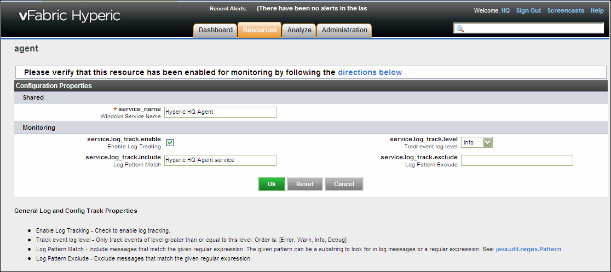
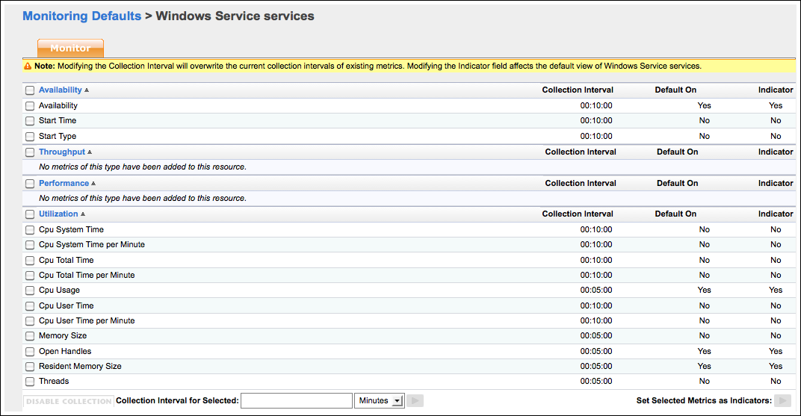

|
vFabric Hyperic 5.7 : Windows Service Service
This page last changed on Mar 23, 2012 by mmcgarry.
Topics marked with * relate to features available only in vFabric Hyperic. Monitoring a Windows ServiceHyperic can monitor a windows service. You configure a platform service of type "Windows Service" on a Windows platform Resource Plugin, Functions, and ClassesThe Windows Service service type is managed by Hyperic's system plugin. Configure the Windows Service in HypericThe "Windows Service" service type must be manually configured.
Windows Service Configuration Properties PageThe Configuration Properties page for the Windows Service service type is shown below.  Windows Service Metrics
Windows Service Monitoring Defaults PageYou can enable and disable metrics, select indicator metrics, and change the collection interval for a resource type on its Monitoring Defaults page. To navigate to a resource type's Monitoring Defaults page:
The Monitoring Defaults page for the Windows Service service type is shown below:  Event TrackingYou can enable log tracking for a network service. If you do, the agent will log an event for responses that match the criteria you specify. To enable log tracking, click the Enable Log Tracking box in the Monitoring section of the Configuration Properties page. For information about Hyperic log tracking functionality and configuration options, and how to view log events, see Set Up Log Tracking for a Resource. |
| Document generated by Confluence on Oct 29, 2012 13:00 |